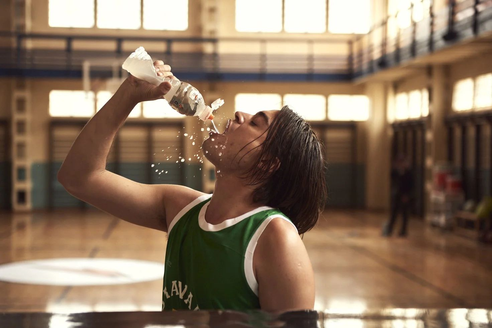
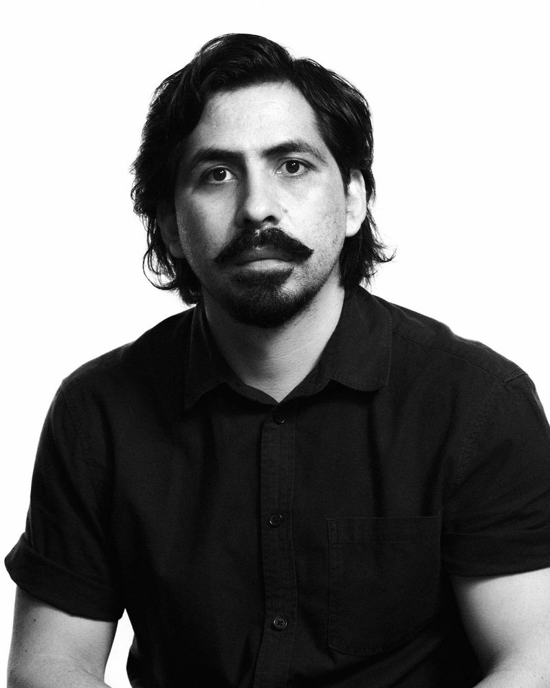

01
Gatorade
Gatorade 30: campaña con atletas olímpicos y deportistas en basquetbol, futbol, clavados y lucha.2021



Gatorade 30, 2021

La fotografía ha sido mi vida desde los 16 años; llegué a ella desde las artes visuales. Hoy fotografío campañas y retratos editoriales para mostrar lo mejor de cada persona, producto y marca, con elegancia.
Gatorade 30: campaña con atletas olímpicos y deportistas en basquetbol, futbol, clavados y lucha.2021
Campañas de temporada: Fashion Fest, Mujeres y Navidad.2021–2022


Portada y retratos de Quién 50, los 50 personajes que transforman a México, y editorial de moda con Fendi.2022 · Revista Quién


¿Tu marca es la siguiente?
Cotizar proyectoDesde $45,000 MXN
Desde $28,000 MXN al mes
Desde $9,500 MXN
Precios + IVA. Licencia de uso incluida.
Hablamos de tu marca, tu público y dónde vivirán las imágenes.
Moodboard, casting, locaciones y plan de tomas, aprobados por ti.
Un set dirigido de principio a fin, con personas y productos reales.
Imágenes retocadas en formatos para web, redes y anuncios, con licencia por escrito.
Comparte lo básico y te enviaré una propuesta. Si prefieres, escríbeme directo.
WhatsAppSi quieres compartir referencias o es urgente, sigamos por WhatsApp.
Continuar por WhatsApp